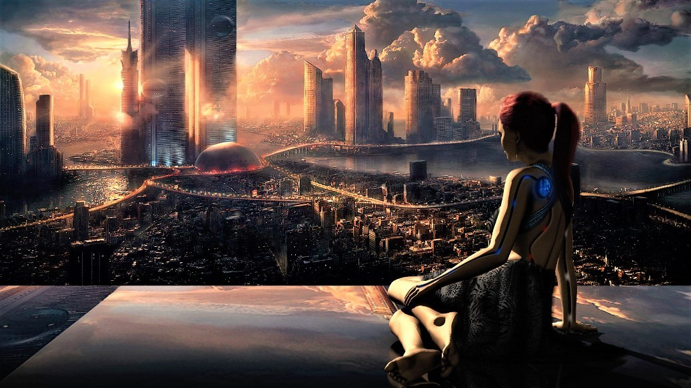

Marzo 3 de 2020
Cumbre del G-20
INTERNACIONALES
La cumbre anual del Grupo de los 20 busca fomentar la cooperación económica global. Sin embargo, como hay tantos funcionarios de alto nivel de varios países en un mismo lugar, usualmente también es un festín de actividad diplomática formal e informal.
Marzo 4 de 2020
Ciudades Futuristas
TECNOLOGÍA
Si estás pensando en visitar algún país y te gusta la tecnología este post te interesará. Al contrario de mucha gente, hay personas que nos gusta viajar a países con mucha tecnología y muy industrializados, en la entrada de hoy veremos que ciudades son las más avanzadas tecnológicamente con las que poder disfrutar de todo un ambiente futurista.
Marzo 4 de 2020
Comentarios Bíblico
MUNDO CRISTIANO

Escrito por teólogos conocidos y populares, comentarios bíblicos ayuda en el estudio de las Escrituras, proporcionando una explicación e interpretación del texto bíblico. Si usted apenas está comenzando a leer las Escrituras o ha estado estudiando la Biblia diariamente, comentarios ofrecen un mejor entendimiento con información básica sobre la autoría, la historia, el escenario y el tema del Evangelio.